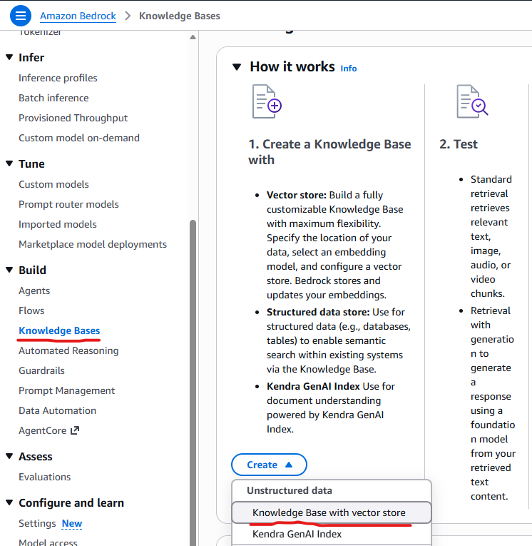
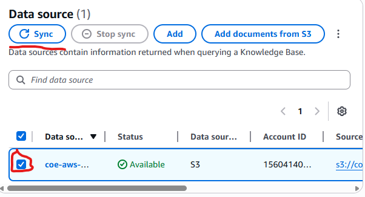
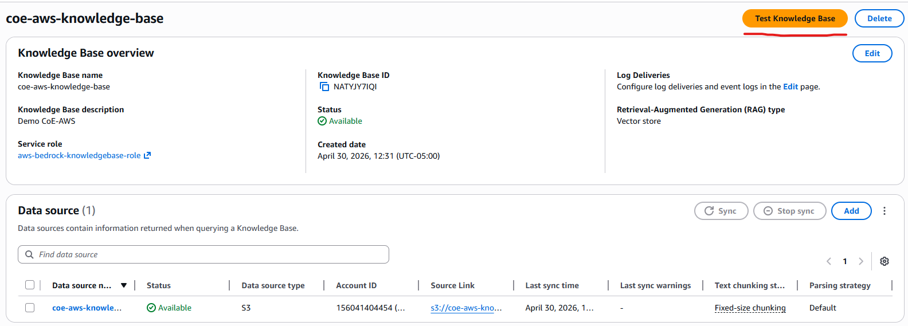
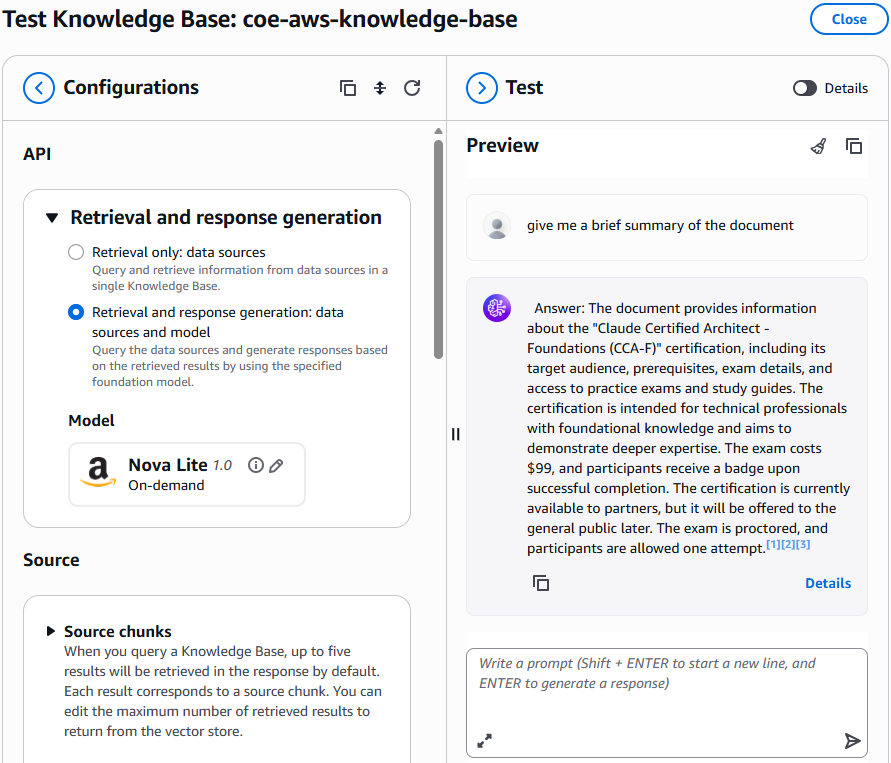

What is RAG? Retrieval Augmented Generation (RAG) is a technique that allows an AI model to answer questions based on your own documents — instead of only relying on its training data. This guide walks through how to set that up using Amazon Bedrock Knowledge Bases and Amazon S3 Vectors as a cost-effective vector store.
💡 Who is this for? Anyone with an AWS account who wants to build a searchable knowledge base from their own documents — no deep ML knowledge required.
Before starting, make sure the following are in place:
Amazon Titan Text Embeddings V2Amazon Nova Pro (or similar)To enable model access, go to the Amazon Bedrock Console → Model Access and request access to the required models before proceeding.
Before creating the knowledge base, the user needs an S3 bucket where the source documents (PDFs, text files, etc.) will be stored.

On the Knowledge Base details page:
Click Next.
This step tells Bedrock where the documents are and how to process them.
Choose a Parsing Strategy:
Amazon Bedrock default parser — for plain text documents (free).Amazon Bedrock Data Automation or Foundation models — for documents with images, tables, or visual content.Choose a Chunking Strategy:
Fixed-size chunking is recommended for simplicity and predictable token sizing.⚠️ Important: Parsing and chunking settings cannot be changed after creation. Choose carefully based on the type of content.
This step defines how text is transformed into vectors and where those vectors are stored.
Amazon Titan Text Embeddings V2 (1024 dimensions).⚠️ If connecting to an existing S3 Vector index, make sure the model dimensions match those used when the index was created. A mismatch will cause ingestion failures.
Configure the Vector Store — Choose one of two options:
Option A — Quick Create (Recommended) Bedrock automatically creates a new S3 vector bucket and index. This is the simplest option for most users.
Option B — Use an Existing Vector Store If an S3 Vector bucket and index already exist, they can be connected here by providing the S3 Vector bucket ARN and vector index ARN.
When using an existing index, it is recommended to add AMAZON_BEDROCK_TEXT to the nonFilterableMetadataKeys list. This optimizes storage for document content while keeping filters (like date or category) functional.
Example index creation:
s3vectors.create_index(
vectorBucketName="my-first-vector-bucket",
indexName="my-first-vector-index",
dimension=1024,
distanceMetric="cosine",
dataType="float32",
metadataConfiguration={"nonFilterableMetadataKeys": ["AMAZON_BEDROCK_TEXT"]}
)
Once the knowledge base is created, the data source must be synchronized. This is what processes the documents and generates the vector embeddings.

During sync, Bedrock will:
💡 Enable Amazon CloudWatch Logs to monitor sync progress and troubleshoot errors in real time.
After syncing, the knowledge base can be tested directly from the Bedrock console.
Two testing modes are available:
| Mode | Description |
|---|---|
| Retrieve Only | Returns the raw document chunks most relevant to the query, along with relevance scores. |
| Retrieve and Generate | Uses a foundation model (e.g., Amazon Nova) to generate a full answer based on retrieved chunks. |

Additional query settings can be configured:

For users who prefer to automate the setup, the knowledge base can be created using the AWS SDK (Python/Boto3). Below is a sample API call:
response = bedrock.create_knowledge_base(
description='Amazon Bedrock Knowledge Base integrated with Amazon S3 Vectors',
knowledgeBaseConfiguration={
'type': 'VECTOR',
'vectorKnowledgeBaseConfiguration': {
'embeddingModelArn': f'arn:aws:bedrock:{region}::foundation-model/amazon.titan-embed-text-v2:0',
'embeddingModelConfiguration': {
'bedrockEmbeddingModelConfiguration': {
'dimensions': 1024, # Must match S3 vector index dimension
'embeddingDataType': 'FLOAT32'
}
},
},
},
name=knowledge_base_name,
roleArn=roleArn,
storageConfiguration={
's3VectorsConfiguration': {
'indexArn': vector_index_arn
},
'type': 'S3_VECTORS'
}
)
📓 A full guided notebook is available on GitHub: amazon-bedrock-samples — S3 Vectors Knowledge Base Notebook
The IAM role attached to the knowledge base needs the following policy:
{
"Version": "2012-10-17",
"Statement": [
{
"Sid": "BedrockInvokeModelPermission",
"Effect": "Allow",
"Action": [
"bedrock:InvokeModel"
],
"Resource": [
"arn:aws:bedrock:{REGION}::foundation-model/amazon.titan-embed-text-v2:0"
]
},
{
"Sid": "KmsPermission",
"Effect": "Allow",
"Action": [
"kms:GenerateDataKey",
"kms:Decrypt"
],
"Resource": [
"arn:aws:kms:{REGION}:{ACCOUNT_ID}:key/{KMS_KEY_ID}"
]
},
{
"Sid": "S3ListBucketPermission",
"Effect": "Allow",
"Action": [
"s3:ListBucket"
],
"Resource": [
"arn:aws:s3:::{SOURCE_BUCKET_NAME}"
],
"Condition": {
"StringEquals": {
"aws:ResourceAccount": [
"{ACCOUNT_ID}"
]
}
}
},
{
"Sid": "S3GetObjectPermission",
"Effect": "Allow",
"Action": [
"s3:GetObject"
],
"Resource": [
"arn:aws:s3:::{SOURCE_BUCKET_NAME}/{PREFIX}/*"
],
"Condition": {
"StringEquals": {
"aws:ResourceAccount": [
"{ACCOUNT_ID}"
]
}
}
},
{
"Sid": "S3VectorsAccessPermission",
"Effect": "Allow",
"Action": [
"s3vectors:GetIndex",
"s3vectors:QueryVectors",
"s3vectors:PutVectors",
"s3vectors:GetVectors",
"s3vectors:DeleteVectors"
],
"Resource": "arn:aws:s3vectors:{REGION}:{ACCOUNT_ID}:bucket/{VECTOR_BUCKET_NAME}/index/{VECTOR_INDEX_NAME}",
"Condition": {
"StringEquals": {
"aws:ResourceAccount": "{ACCOUNT_ID}"
}
}
}
]
}
If a customer-managed KMS key is used, add a
kms:GenerateDataKeyandkms:Decryptpermission for the key ARN.
To avoid unnecessary charges after testing, follow these cleanup steps:
Delete the Knowledge Base:
Delete the S3 Vector index and bucket (via AWS CLI):
aws s3vectors delete-index \
--vector-bucket-name YOUR_VECTOR_BUCKET_NAME \
--index-name YOUR_INDEX_NAME \
--region YOUR_REGION
aws s3vectors delete-vector-bucket \
--vector-bucket-name YOUR_VECTOR_BUCKET_NAME \
--region YOUR_REGION
Delete the IAM role:
Delete the S3 source files: